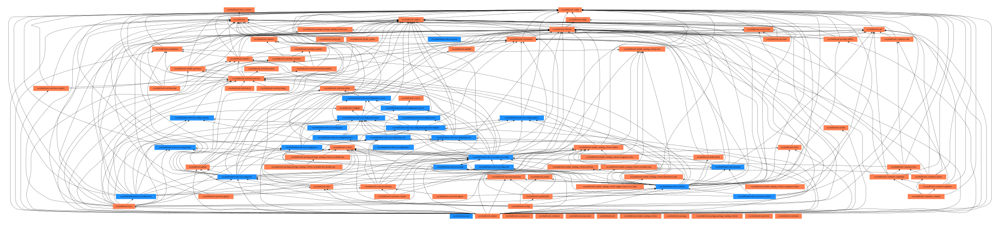

EasyBuild Framework Overview¶
Package Structure¶
The easybuild-framework package provides the following easybuild.* Python
packages:
-
easybuild.framework is the core of EasyBuild, which contains the machinery to build and install software by processing EasyConfigs and their EasyBlocks.
-
easybuild.tools is a toolbox of utilities used across the EasyBuild codebase (easybuild-framework and easybuild-easyblocks). Its functionality ranges from handling EasyBuild options and configuration, to file system operations, including the integration with GitHub, support for hooks, etc.
-
easybuild.toolchains contains all toolchain definitions.
Overview of the package structure of EasyBuild framework (v4.7.1) — easybuild.framework shown in blue and easybuild.tools in orange:

Workflow Overview¶
The following diagram shows the main steps carried out by EasyBuild for a
regular software installation with the eb command:
stateDiagram-v2
easybuild.main --> tools
robot --> build_install
build_install --> easyblock
state "easybuild.tools" as tools{
[*] --> options
options --> parse_ec
process_ec --> robot
state "easybuild.tools.options
• parsing of options
• set_up_configuration( )" as options
state "easybuild.tools.robot
• resolve_dependencies( )" as robot
}
state "build_and_install_software( )" as build_install
state "easybuild.framework.easyblock" as easyblock{
[*] --> build_install_one
build_install_one --> get_easyblock
get_easyblock --> easyblock_class
state "easybuild.framework.easyblock
• build_and_install_one( )" as build_install_one
state "class EasyBlock
• run_all_steps( )" as easyblock_class
}
state "easybuild.framework.easyconfig" as easyconfig{
parse_ec --> process_ec
state "easybuild.framework.easyconfig.tools
• parse_easyconfigs( )" as parse_ec
state "easybuild.framework.easyconfig.easyconfig
• process_easyconfig( )" as process_ec
state "easybuild.framework.easyconfig.easyconfig
• get_easyblock_class( )" as get_easyblock
}
The process starts by calling the set_up_configuration function, which takes
care of configuration options passed to EasyBuild. Either through the command
line, configuration files or in the environment.
The scope of the EasyBuild execution is ultimately defined by the target
easyconfig files given in the eb command. They will define the number of
actions to carry out, such as software installations, fetching of sources or
opening of PRs. Therefore, target easyconfig files are parsed early in the
process, just after the runtime options have been resolved. The tooling to
parse easyconfig files is located in a specific tools module in
easybuild.framework.easyconfig.tools, while the EasyConfig class is found
in easybuild.framework.easyconfig.easyconfig.
Once the easyconfig files are properly parsed, a common action is to resolve
the dependencies for those installations with the --robot
option. This is handled in easybuild.tools.robot which provides methods to
search easyconfig files, resolve dependencies, and check conflicts between
software packages.
The resolve_dependencies function returns an ordered list of all (parsed)
easyconfigs that have to be installed to fulfill the dependency requirements of
the requested installation (or throws an error if those dependencies cannot be
fulfilled). EasyBuild will iterate over that list carrying out each
installation in sequence.
The installation procedure of each software package is defined by the
easyblock attached to it. This means that EasyBuild creates an
EasyBlock instance for each individual installation and determines the
easyblock to use from the easyconfig file. Once the EasyBlock instance is
created, EasyBuild will call its run_all_steps() method to execute the
installation steps defined for that software.
Step-wise Installation Procedure¶
flowchart LR
subgraph source_phase [A. Setting up]
direction TB
parse[A1. Parse EasyConfig]
fetch[A2. Fetch sources]
check[A3. Check readiness]
unpack[A4. Unpack sources]
patch[A5. Apply patches]
parse --> fetch
fetch --> check
check --> unpack
unpack --> patch
end
subgraph build_phase [B. Installing]
direction TB
prepare[B1. Prepare build]
config[B2. Configure build]
build[B3. Compile/build]
test[B4. Test]
install[B5. Install]
prepare --> config
config --> build
build --> test
test --> install
end
subgraph ext_phase [Extensions]
ext_install[Extension Install]
end
subgraph clean_phase [C. Wrapping up]
direction TB
postinstall[C1. Post-Install]
sanity[C2. Sanity check]
clean[C3. Clean-up]
module[C4. Make Module]
perms[C5. Permissions]
package[C6. Package]
testcases[C7. Test Cases]
postinstall --> sanity
sanity --> clean
clean --> module
module --> perms
perms --> package
package --> testcases
end
source_phase --> build_phase
build_phase --> ext_phase
ext_phase --> clean_phaseEasyBlock class¶
The base EasyBlock class in easybuild.framework.easyblock is a skeleton class
that cannot carry out any installation on its own, but that lays the ground for
child classes to define custom installation procedures. This does not mean that
the EasyBlock class is an empty shell though, it is actually one of the biggest
classes in EasyBuild with 4000+ lines of code (v4.7.x). It provides methods for
generic actions that are useful in most installations, independently of the
installation method.
Most of the steps in the initial Arrangement phase are
already covered to some extent in the EasyBlock class, such as:
-
A2. Fetch sources:
EasyBlock.fetch_sources,EasyBlock.fetch_patches,EasyBlock.obtain_file -
A3. Check readiness:
EasyBlock.make_buildir,EasyBlock.reset_env -
A4. Unpack sources:
EasyBlock.checksum_step,EasyBlock.extract_step
Several steps in the last Cleaning phase are already
covered by the base EasyBlock as well:
-
C1. Post-Install:
EasyBlock.run_post_install_commands,EasyBlock.apply_post_install_patches,EasyBlock.fix_shebang -
C2. Sanity check:
EasyBlock.sanity_check_step,EasyBlock.sanity_check_load_module,EasyBlock.sanity_check_linked_shared_libs -
C3. Clean-up:
EasyBlock.cleanup_step -
C4. Env. Module:
EasyBlock.make_module_step -
C5. Permissions:
EasyBlock.permissions_step
Therefore, custom easyblocks (child classes of EasyBlock) only need to define
some of the steps in the Build and Install phase, the
core of the workflow. Specifically, the configuration (B2), build (B3) and
install (B4) steps are the only mandatory steps in custom easyblocks. Check the
section Implementing EasyBlocks to start writing
your own custom easyblocks.
Extension and ExtensionEasyBlock classes¶
The EasyBlock class has the machinery to trigger the installation of any
extensions found in the easyconfig file. The method EasyBlock.run_all_steps
always goes through EasyBlock.extensions_step which executes the installation
of each extension instance in EasyBlock.ext_instances (if any).
The installation process in the extension step starts in
EasyBlock.install_extensions, which will determine the installation approach
for the extensions (sequential or parallel based on given options/support) and
call the Extension.run method of each extension instance. This run method
is the one carrying out the actual installation of the extension and typically
executes the install step of the parent EasyBlock with some extra actions
before and/or after it. Nonetheless, custom easyblocks for extensions can fully
redefine their run method.
Warning
In EasyBuild v5.0 the name of the Extension.run method will be changed
to a more meaningful and less generic name.
Framework also provides the ExtensionEasyBlock class which inherits from both
EasyBlock and Extension. This class is useful for software that can be
either installed standalone with their own easyconfig file or as an extension:
-
as extension:
ExtensionEasyBlockuses theExtensionclass -
stand-alone:
ExtensionEasyBlockuses theEasyBlockclass
For instance, PythonPackage, RPackage or PerlModule are generic easyblocks
commonly used to install standalone packages or extensions of packages that use
other easyblocks. You will find many examples of both cases in our
easyblock-easyconfigs
repository.
EasyConfig class¶
The EasyConfig class handles parsing and validating of easyconfig files. As
such, EasyConfig is independent from EasyBlock and it is actually needed to
determine the easyblock used in the installation of the target software
package.
Once the target easyconfig file is read and all its parameters are validated, they will be accessible through different attributes and methods of the EasyConfig object. The main examples are:
-
EasyConfig.namereturns the name of the package -
EasyConfig.versionreturns the version of the package -
EasyConfig.toolchainreturns the toolchain used by the package -
EasyConfig.dependencies()returns the list of dependencies
Note
The EasyConfig instance is also accessible from the corresponding EasyBlock
instance through its EasyBlock.cfg attribute.
EasyStack class¶
Warning
EasyStacks are an experimental feature in active development.
The machinery for EasyStacks is located in the easybuild.framework.easystack module. It contains:
-
EasyStackParser: class to parse the easystack files in YAML format -
SoftwareSpecs: attribute class with the specs of each software package in the easystack -
EasyStack: collection ofSoftwareSpecsin the easystack
Toolchain mechanism¶
A toolchain in EasyBuild is much more than just a bundle of
libraries and compilers to build and run software in a consistent environment.
Toolchains are defined by their own classes built on top of the Toolchain
class.
The base Toolchain class is defined in easybuild.tools.toolchain.toolchain.
It does not only provide the attributes defining the toolchain (i.e. name and
version) but also provides methods to setup the build environment with that
toolchain :
-
set the environment of the toolchain:
Toolchain.prepare-
validate dependencies for the toolchain:
Toolchain._check_dependencies -
load modules of the toolchain:
Toolchain._load_modules -
set environment variables (e.g.
$CC,$CFLAGS):Toolchain._setenv_variables -
handle build options:
Toolchain.prepare_rpath_wrappers,Toolchain.prepare_compiler_cache,Toolchain.handle_sysroot
-
Hence, the base Toolchain class provides the skeleton to further develop
custom toolchain definitions through child classes. EasyBuild already provides
many toolchains definitions that cover
common and not-so-common combinations of compilers,
numeric libraries and MPI implementations. All toolchain definitions are found
in the easybuild.toolchains package of the EasyBuild framework.
Toolchains are modular. Each toolchain component (i.e compiler, numerical
library, MPI implementation) is defined by its own child class or by
multiple ones. These components are combined in sub-toolchains (e.g. the
gompi toolchain) which can then be re-combined with other components in
bigger toolchains (e.g. the foss toolchain). Therefore, the resulting options
of the toolchain, its attributes and methods will be the combined result of all
inherited class components.
flowchart
toolchain --> compiler & mpi & linalg & fft
subgraph "Compiler"
compiler --> gcc --> gcccore --> gcctoolchain
end
subgraph "MPI Implementation"
mpi --> ompi
end
gcctoolchain & ompi --> gompi --> foss
subgraph "Fast-Fourier Libraries"
fft --> fftw
end
fftw --> foss
subgraph "Linear Algebra Libraries"
linalg --> oblas & fblas
linalg --> blacs --> scalapack
end
oblas & fblas & scalapack --> foss
toolchain("class Toolchain
eb.tools.toolchain.toolchain")
compiler("class Compiler
eb.tools.toolchain.compiler")
gcc("class Gcc
eb.toolchains.compiler.gcc")
gcccore("class GccCore
eb.toolchains.gcccore")
gcctoolchain("class GccToolchain
eb.toolchains.gcc")
mpi("class Mpi
eb.tools.toolchain.mpi")
ompi("class OpenMPI
eb.toolchains.mpi.openmpi")
gompi("class Gompi
eb.toolchains.gompi")
fft("class Fft
eb.tools.toolchain.fft")
fftw("class Fftw
eb.toolchains.fft.fftw")
linalg("class LinAlg
eb.tools.toolchain.linalg")
oblas("class OpenBLAS
eb.toolchains.linalg.openblas")
fblas("class FlexiBLAS
eb.toolchains.linalg.flexiblas")
blacs("class Blacs
eb.toolchains.linalg.blacs")
scalapack("class ScaLAPACK
eb.toolchains.linalg.scalapack")
foss("class Foss
eb.toolchains.foss")EasyBuild configuration options¶
Configuration options in EasyBuild can come from multiple sources:
- command line arguments to the
ebcommand - environment variables
- settings in configuration files
- settings in easyconfig files
Tip
Check the Configuring EasyBuild for details on how to use the different configuration mechanisms.
All configuration options in EasyBuild are defined in easybuild.tools.options.
The EasyBuildOptions class gathers all options, including the name of the
argument and its help string.
The easybuild.tools.options module also handles the parsing of options
through its set_up_configuration() method, which is called in the
very early stages of the eb execution. The main step is
parse_options() to read and validate the command line itself.
Once all options are parsed, those options listed in easybuild.tools.config
will be gathered in a singleton BuildOptions class. This class is the
centralized location of configuration options for the current EasyBuild
session. The method build_option() in easybuild.tools.config provides a
simple interface to it:
if build_option('ignore_test_failure'):
print_warning("Test failure ignored")
else:
raise EasyBuildError("Test failure")
Therefore, adding a new option to eb and making that options available
through build_option() is a two step process. First the option has to be
added to EasyBuildOptions in easybuild.tools.options and then also listed
in easybuild.tools.config. As an example, you can check
easybuild-framework#4226
which is a PR adding the download_timeout option to EasyBuild.
Features in easybuild.tools¶
Environment modules¶
Interface¶
easybuild.tools.modules provides the
interface to the different environment module tools supported
in EasyBuild. The ModulesTool class is an abstraction layer to interact with
the environment modules in the host system.
Additionally, easybuild.tools.modules also provides methods to retrieve
information about loaded software in the EasyBuild environment, such as
get_software_root() or get_software_version(), which are extensively used
in easyblocks.
Naming scheme¶
easybuild.tools.module_naming_scheme
contains the definitions of the module naming schemes
(MNS) supported in EasyBuild. You will find in it one module per MNS. The
structure of the naming scheme is defined in corresponding classes based on
ModuleNamingScheme.
Module generator¶
easybuild.tools.module_generator
is the engine used by EasyBuild to write module files.
It provides the ModuleGeneratorLua and ModuleGeneratorTcl classes for each
of the supported module file formats. The module generator is mainly used in
the make module step of the installation process.
Host system¶
System information¶
easybuild.tools.systemtools provides a
toolset to check multiple aspects of the underlying operative system, such as
CPU specs, amount of memory, OS characteristics and system libraries.
Environment¶
easybuild.tools.environment provides an
interface to access and modify the environment in the host system.
File system¶
easybuild.tools.filetools provides
multiple methods to interact with the underlying file system in the host. This
abstraction layer sits on top of lower interfaces provided by the standard
Python library.
Job schedulers¶
easybuild.tools.job contains the interfaces to
the different job schedulers supported in EasyBuild.
Containers¶
easybuild.tools.containers contains the
interfaces to the different container systems supported in EasyBuild.
GitHub integration¶
easybuild.tools.github provides the interface
to remote repositories in GitHub. It allows to fetch easyconfig files from PRs,
open new PRs, upload test reports and several other maintainer actions on PRs.
Hooks¶
easybuild.tools.hooks contains the definition
of all accessible hooks in EasyBuild. The actual call to the hooks
defined by the user are spread across the steps of the installation
process. Hence, this module is only interesting if you
want to add or modify the available hooks.
Contributing to Framework¶
Reporting issues and bugs¶
Reporting issues and bugs to easybuild-framework is no different than to any
other bug tracker. You should provide as many information as needed to allow
the developers to reproduce your issue/bug, including:
- a description of what you are trying to do
- a description of the steps to reproduce the problem
- EasyBuild configuration and host system information
- custom easyblock or easyconfig files
- full error messages and tracebacks
In the case of EasyBuild, the main complication to report issues and bugs might
be to determine if the issue/bug at hand does actually originate in
easybuild-framework or if instead it belongs in easybuild-easyblocks or
easybuild-easyconfigs. It is not uncommon that the traceback of bugs in
easyblocks or easyconfigs reach the codebase in easybuild.framework or
easybuild.tools.
Nevertheless, do not worry too much if you cannot determine which repository to
target with your issue/bug. In case of doubt, easybuild-framework is the best
bet in general and maintainers can move issues between EasyBuild repositories
if needed.
Pull requests¶
Contributing bug fixes or new features to easybuild-framework is always
welcomed. However, keep in mind that due to the broader scope of the source
code in framework, making contributions might be a bit more complicated than
for easyblocks and easyconfigs:
-
EasyBuild does not currently provide integration in the
ebcommand to make contributions to theeasybuild-frameworkrepository. Therefore, as contributor, you have to manually forkeasybuild-frameworkand open the pull request from your fork. The GitHub documentation contains a detailed description on how to create PRs from forks. -
We recommend to link all new PRs in
easybuild-frameworkto a corresponding issue in the issue tracker. Splitting the issue from the PR helps focus the activity in the PR to the changes in the source code and keep it separate from the discussion about the underlying problem. -
The source code of
easybuild-frameworkmust be covered by the unit tests intest.frameworkand all tests must pass. You can run the unit tests in EasyBuild on your computer to check their results before opening the PR to our repository. In general, this requirement on unit tests has the following implications depending on the type of changes introduced in your PR:-
Bug fix: the presence of a bug means that either that part of the codebase is currently uncovered by the tests or that it is already covered but tests are also buggy.
-
New feature: new unit tests have to be added covering the new feature.
Therefore, in (almost) all cases, new PRs to framework have to also include related changes in unit tests. The suite of unit tests in framework is already very extensive and you will find all tests organized per module in the
test/frameworkdirectory.If you are not familiar with writing tests in Python, you can find all the details in the
unittestdocumentation. We also recommend the guide Getting Started With Testing in Python as a more comprehensive alternative. -